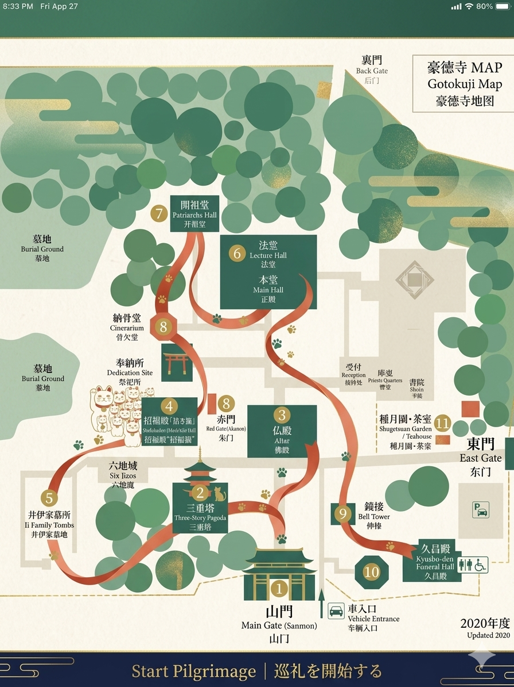

豪徳寺
Fortune Cat GOUTOKUJI
Please choose your language
日本語
Japanese
JA
English
English
EN
繁体中文
Traditional Chinese
ZH
한국어
Korean
KO
Español
Spanish
ES
Français
French
FR
Digital Premium Pamphlet · デジタルパンフレット
Unlock Premium Guide プレミアムパンフレットを解放
デジタルプレミアムパンフレット
通常 ¥1,500
今だけモニター価格
¥ 1,000
🎁 おみくじ
10大スポット ARナビゲーション
ElevenLabs AI多言語ナレーション
満願成就デジタルスタンプラリー
無料デジタルおみくじ（何度でも）
🐱 無料で体験を開始する（デモ）
🔒 Secured by Stripe ·
スキップしてデモ体験 →
同行者のスマホで標準カメラを起動し、QRコードをスキャンしてください。追加費用なしで最大4台のデバイスに完全なガイドが展開されます。
同期して次へ ➔
スキップして次へ / Skip →
以下を確認してチェックボックスをつけてくださいPlease review and check all items below
マナーを確認して進む ➔
Sanctuary Overview
境内全体マップ Goutokuji Sanctuary Master Map

GOUTOKUJI MAP · タップでスポットへジャンプ
📍 境内10大スポット案内 / 10 Key Landmarks
1
山門 — 明治17年(1884年)上棟。関東大震災後に再建。額には「碧雲関」と記されている。
2
三重塔 — 平成18年(2006年)落慶。高さ22.5m。十二支の彫り物に「招き猫」が隠されている。
3
仏殿 — 正面に「弐世仏」の篆額。釈迦如来像・阿弥陀如来像・弥勒菩薩像を安置。
4
招福殿「招き猫」 — 招き猫の元祖。井伊家2代藩主直孝が愛猫「たま」の招きで落雷の難を逃れた伝説の地。
5
井伊家墓所 — 幕末の大老・井伊直弼の墓。平成20年(2008年)に国史跡に指定。
6
法堂・本堂 — 昭和42年(1967年)落慶。寺宝「井伊直亮肖像画」を所蔵。
7
開祖堂 — 平成11年(1999年)落慶。歴代住職・藩主の位牌・檀家の位牌が安置されている。
8
赤門 — 明治18年(1885年)に井伊家より寄進。現在地へ移築された朱塗りの門。
9
梵鐘（鐘楼） — 延宝7年(1679年)鋳造。区内最古。平成12年に世田谷区指定有形文化財。
10
地蔵堂 — 令和2年(2020年)落慶。地蔵菩薩半跏像が安置されている。
📍 おすすめ順路 / Recommended Route:
理解して巡礼を開始する / Start Sanctuary Pilgrimage ➔